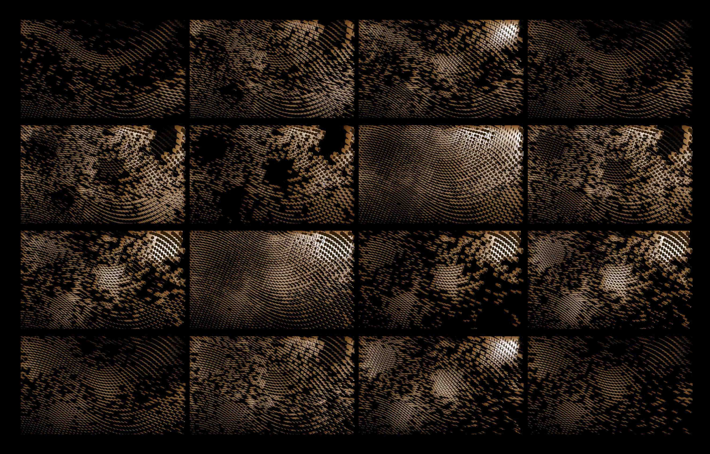
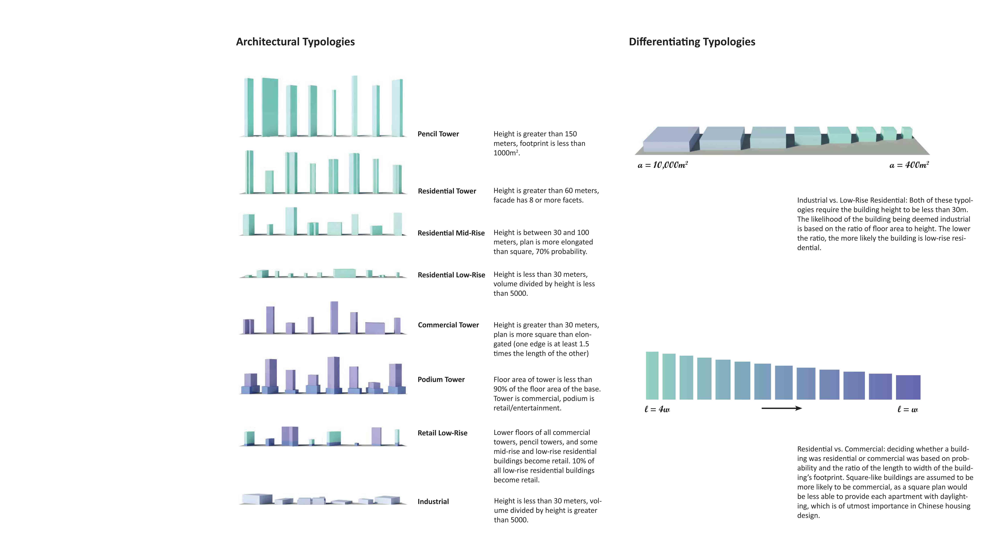
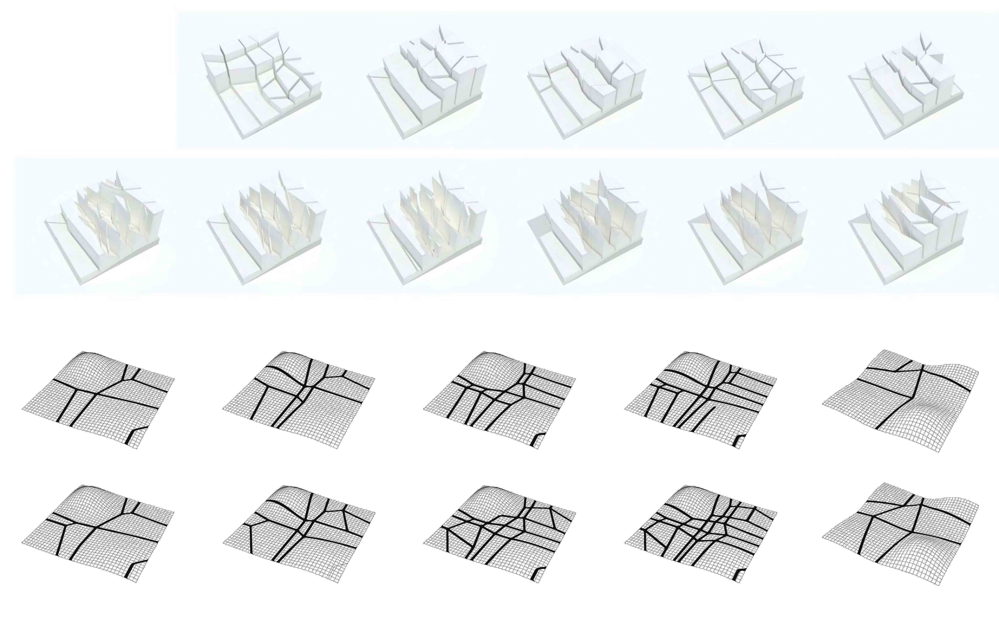

<div class="row">
  <div class="col-sm-12">
    <div id="carouselExampleControls" class="carousel slide" data-ride="carousel">
      <ol class="carousel-indicators">
        <li data-target="#carouselExampleControls" data-slide-to="0" class="active"></li>
        <li data-target="#carouselExampleControls" data-slide-to="1"></li>
        <li data-target="#carouselExampleControls" data-slide-to="2"></li>
        <li data-target="#carouselExampleControls" data-slide-to="3"></li>
        <li data-target="#carouselExampleControls" data-slide-to="4"></li>
        <li data-target="#carouselExampleControls" data-slide-to="5"></li>
        <li data-target="#carouselExampleControls" data-slide-to="6"></li>
        <li data-target="#carouselExampleControls" data-slide-to="7"></li>
        <li data-target="#carouselExampleControls" data-slide-to="8"></li><!-- 
        <li data-target="#carouselExampleControls" data-slide-to="9"></li> -->
      </ol>
      <div class="carousel-inner" role="listbox">
        <div class="carousel-item active">
          
        </div>
        <div class="carousel-item">
          
        </div>
        <div class="carousel-item">
          
        </div>
        <div class="carousel-item">
          
        </div>
        <div class="carousel-item">
          
        </div>
        <div class="carousel-item">
          
        </div>
        <div class="carousel-item">
          
        </div>
        <div class="carousel-item">
          
        </div>
        <div class="carousel-item">
          
        </div>
      <!--   <div class="carousel-item">
          
        </div> -->
      </div>
      <a class="carousel-control-prev" href="#carouselExampleControls" role="button" data-slide="prev">
        <span class="carousel-control-prev-icon" aria-hidden="true"></span>
        <span class="sr-only">Previous</span>
      </a>
      <a class="carousel-control-next" href="#carouselExampleControls" role="button" data-slide="next">
        <span class="carousel-control-next-icon" aria-hidden="true"></span>
        <span class="sr-only">Next</span>
      </a>
    </div>

    <div class="main-text hidden-xs">
      <div class="projDesc">
        <h2>ENDURANCE AND OBSOLESCENCE</h2> 
        <p><a href='../11_endurance/home'>Hong Kong, 2010-2011 </a><br> <br>
        This work was done under the supervision of Professor Tom Verebes at the University of Hong Kong. A primary goal of this project was to develop a parametric tool box to facilitate more responsible urban design in mainland China. Specifically, these tools were developed to promote both a reorganization of over-familiar building typologies as well as a more harmonious engagement with topographical environments, in an attempt to steer away from the increasingly generic conditions currently found in Chinese cities. This work was featured in <a href='https://books.google.com/books?id=UclEAQAAQBAJ&dq=endurance+and+obsolescence+tom+verebes'><i>Masterplanning the Adaptive City</i> </a>by Tom Verebes. 
        <!-- The work displayed consists of documentation of these tools and their outputs. Some of the tools are analytical; taking 3D models of urban swatches as input, and outputting data on the area’s building mass, typologies, zoning, and local clustering. This analytical data can then be used as reference for future urban development, in order to maintain some semblance of the local urban character. Other tools produce specific design outcomes. For example, a significant part of the project was invested in developing systems of road networks that are unique to the site topography. The algorithms within these programs aim to maximize connectivity and site access while minimizing slope deviation and impact to the site. Other design tools are more architectural, generating arrays of building geometries shaped by transforming and mixing typologies, as well as employing site-specific solar vectors to optimize daylighting conditions. Additional tools then test these outcomes for viability in terms of solar exposure, programming, and massing properties. All tools were developed using either Rhinoscript or Grasshopper/VB Script. --> <br> <br>
        Images: <a href='http://ocean-cn.org/projects/urbanism-masterplanning-urban-design-infrastructure-landscape/'>OCEAN CN</a>

        </p>
     </div>
    </div>
  </div>
</div>